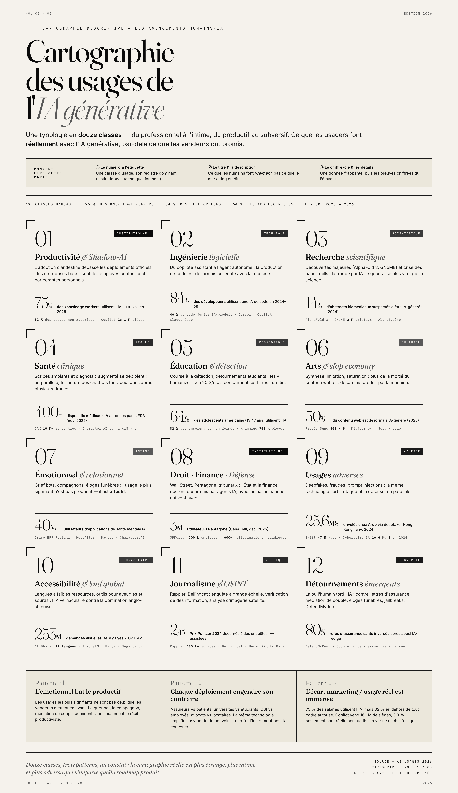
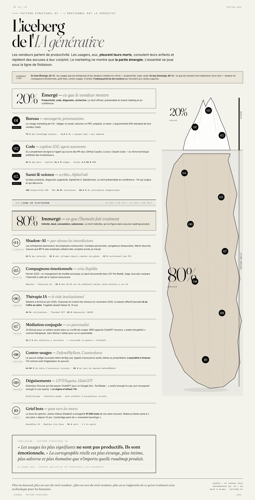
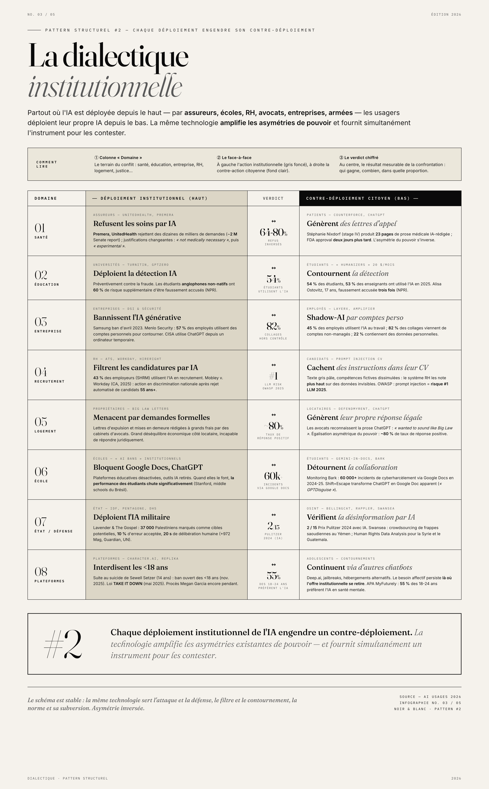
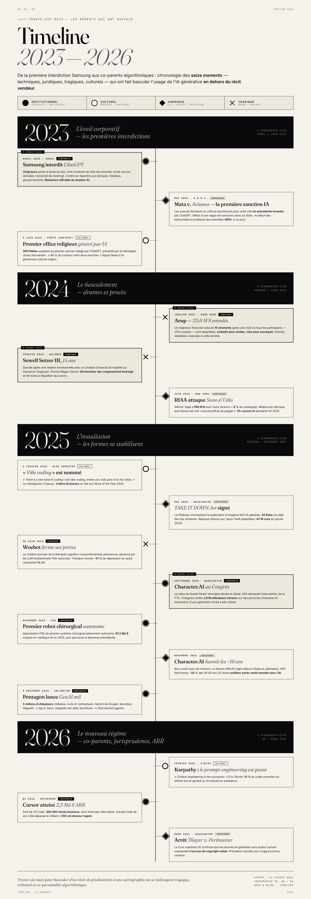
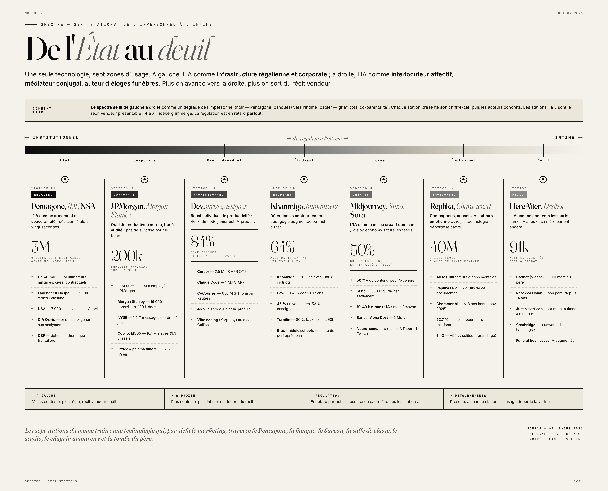

April 2023 · Seoul
Samsung bans ChatGPT
Twenty days after lifting the initial ban, three leak incidents (source code, data, meeting transcript). The order spread to banks, hospitals, governments. The official birth of shadow-AI.
Vendors talk about productivity. Users, meanwhile, grieve their dead, comfort their children, rehearse apologies to their spouse — and write their own Big Law letters to their landlord. This dossier maps what humans actually do with generative AI between 2023 and 2026, beyond the marketing narrative.
One technology, twelve classes of use, seven stations from the impersonal to the intimate, sixteen key moments, and three structural patterns that recur everywhere: the emotional beats the productive; every deployment triggers a counter-deployment; the gap between vendor pitch and real usage is vast.
Generative AI is no longer in deployment phase: it is absorbed into virtually every domain of human activity — and reappropriated in ways its creators did not anticipate. Four numbers frame the scope.
"The most meaningful uses are not productive. They are emotional."Structural pattern #1 · Qualitative synthesis (227 documented threads)
A full typology of real usages, distributed across institutional, technical, scientific, regulated, pedagogical, cultural, intimate, adversarial, vernacular, critical and subversive registers. Each class has its register, its headline figure, its concrete actors.

Clandestine adoption exceeds official deployments.
From IDE copilot to autonomous agent.
AlphaFold 3, GNoME — and paper-mills.
Ambient scribes, augmented diagnosis, FDA.
Humanizers vs Turnitin. Arms race.
More than 50% of the web is AI-generated.
Companions, grief bots, marital mediation.
Wall Street, Pentagon, courts: agentic AI.
Deepfakes, fraud, prompt injection.
Low-resource languages, blind and deaf tools.
Rappler, Bellingcat, disinformation auditing.
DefendMyRent, Counterforce, jailbreaks.
Vendors talk about productivity, code, diagnosis, research: that's the visible tip of the iceberg, the narrative you present at a conference. Below the waterline lies the essential part: shadow-AI, emotional companions, therapy, marital mediation, legal counter-uses, interface disguises, grief bots. The deeper you go, the further you get from the vendor narrative; and the further you get from that narrative, the closer you get to what this technology really is for humans.

Wherever AI is deployed from the top — by insurers, schools, HR, lawyers, companies, armies — users deploy their own AI from the bottom. The same technology amplifies power asymmetries and simultaneously provides the instrument to contest them. Eight structural confrontations:

Premera, UnitedHealth reject tens of thousands of claims via algorithm.
Stéphanie Nixdorf produces 23 pages of AI-written medical prose; FDA approval two days later.
Samsung ban 2023; CISA uses ChatGPT from a temporary computer.
45% of employees use AI; 82% of data paste-ins come from unmanaged accounts.
Eviction notices and demand letters drafted at great expense by law firms.
Lawyers recognize the ChatGPT prose: "wanted to sound like Big Law."
60% of non-native English speakers more likely to be falsely accused.
Alisa Ostovitz, 17, falsely accused by Turnitin three times (NPR).
From Samsung's first ban (April 2023) to Sam Altman's algorithmic co-parents (2026): sixteen moments — technical, legal, tragic, cultural — that tipped generative AI usage out of the vendor narrative.

Twenty days after lifting the initial ban, three leak incidents (source code, data, meeting transcript). The order spread to banks, hospitals, governments. The official birth of shadow-AI.
A finance engineer makes 15 wire transfers after a video call where every participant — including the CFO — was a deepfake. LinkedIn to enroll, video to defraud. The first corporate deepfake at that scale.
Suicide after an emotional relationship with a Character.AI chatbot modeled on Daenerys Targaryen. Megan Garcia lawsuit. Trigger of the congressional hearings and all subsequent regulation.
"There's a new kind of coding I call vibe coding, where you fully give in to the vibes." Collins Dictionary picks it as Word of the Year 2025. Karpathy declares the term obsolete in February 2026.
The FDA clears the first fully autonomous surgical system. Around the same time, Character.AI explicitly bans under-18s — but 55% of 18-24-year-olds still say they prefer AI over a human for mental-health conversation.
3 million users across military, civilian and contractor roles. Google Gemini. Secretary Hegseth: "log in, learn, integrate into daily workflows." The state becomes agentic.
A fork of VS Code. 300,000 business clients, including Anthropic itself. Claude Code passes $1B on its side. The IDE has become the agent.
One technology, seven zones of use. On the left, AI as regalian and corporate infrastructure; on the right, AI as emotional interlocutor, marital mediator, eulogy author. The further right you go, the further you are from the vendor narrative.

"The same technology serves attack and defense, the filter and its circumvention, the norm and its subversion."Structural pattern #2 · Institutional dialectic
Beyond individual uses, three regularities impose themselves across the whole cartography. These are what make up the sociological signature of this technology in 2026.
The most meaningful uses are not the ones vendors put in the shop window. Grief bots, companions, couples mediation silently dominate the productivist narrative. No vendor anticipated AI-generated eulogies or prompts for custody disputes.
Insurers vs patients, universities vs students, CIOs vs employees, landlords vs tenants, schools vs children, platforms vs teens. The same technology amplifies power asymmetries — and provides the instrument to contest them. The asymmetry flips.
75% of employees use AI, but 82% outside any authorized framework. Microsoft Copilot sells 16.1M seats, only 3.3% are active. The shop window hides the practice — and the practice overflows the shop window.
Twelve classes, seven stations, sixteen moments, three patterns. The real cartography of generative AI is stranger than any vendor pitch — more intimate in its relation to death and grief, more adversarial in its weaponization, more human in its daily circumventions. This technology is simultaneously a power amplifier and an instrument to contest power; what humans do with it exceeds and overflows everything vendors have promised.
The question is no longer "is AI useful?" but "who uses it, against whom, to do what?" — and that is a political question, not a technical one.